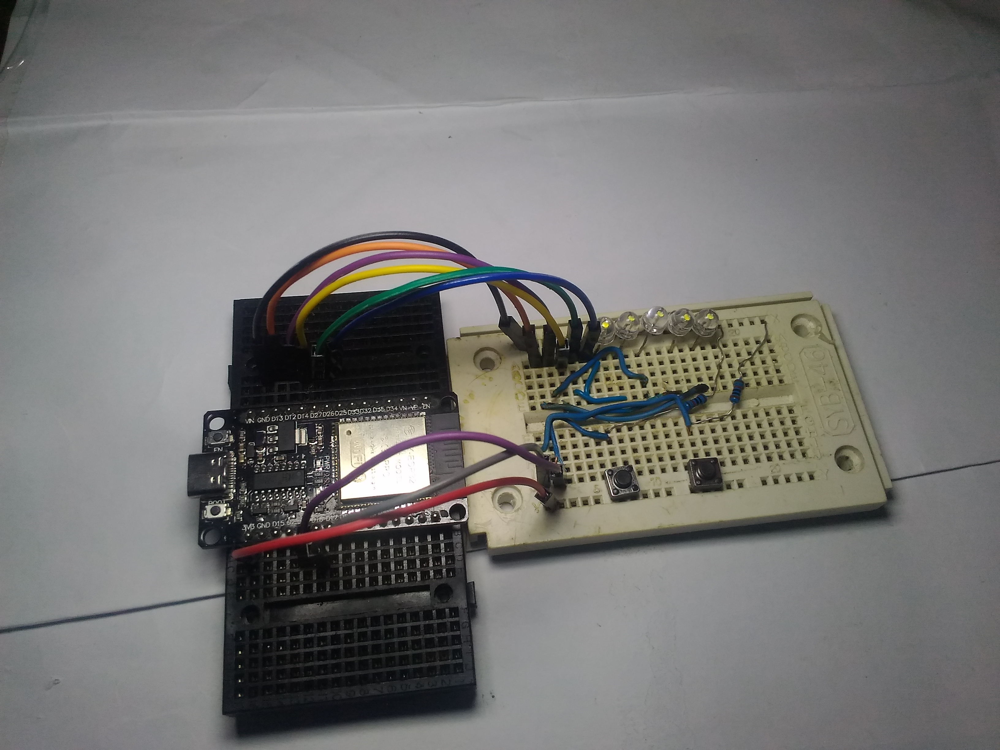
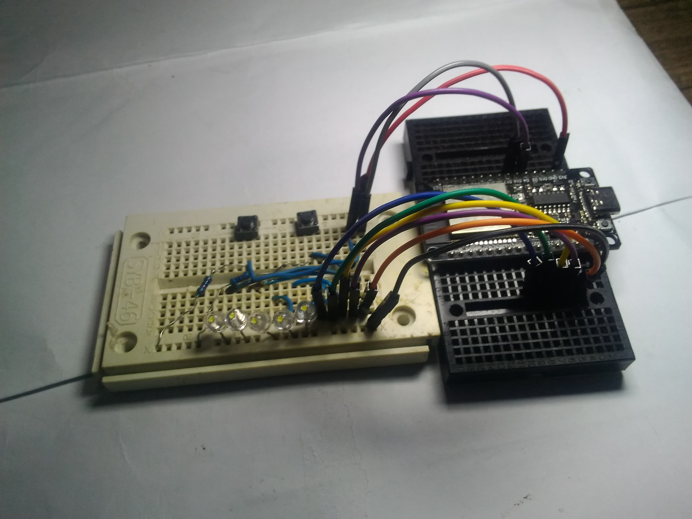
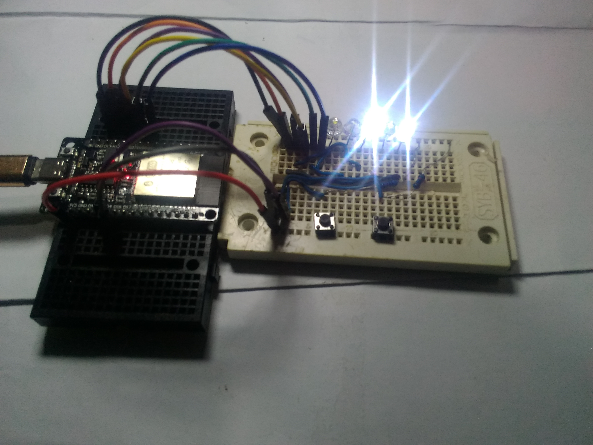
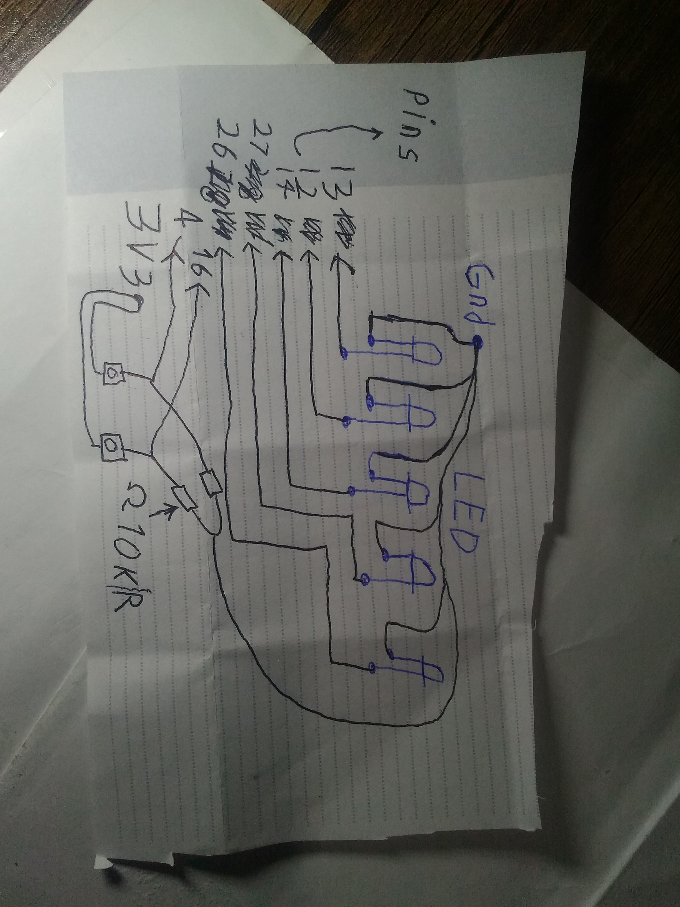
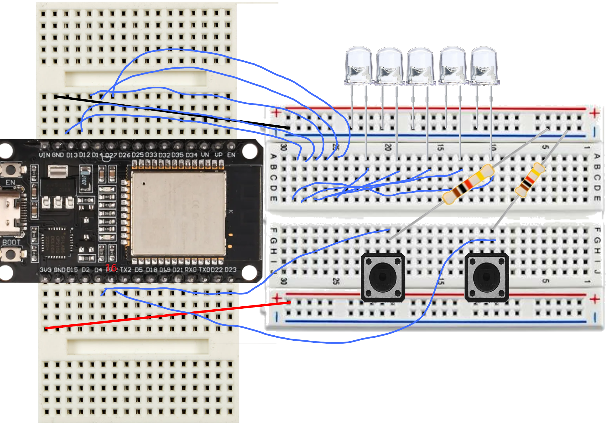

Watch the game working: Click here to see the video (then click view raw).
This project is based on Arduino. You need one of these:
| Component | Amount |
|---|---|
| LED (any color, low-power) | 5 |
| Breadboard | 1-2 |
| Jumper wires (male-to-female or male-to-male) | 15+ |
| Push buttons | 2 |
| Resistor 10K Ohm | 2 |
| Resistor 220-470 Ohm (for LEDs) | 5 |
| Arduino Uno / Nano / ESP32 / any board | 1 |
| From | To | With |
|---|---|---|
| GND (board) | LED cathodes (short legs) | direct or via 470Ω resistor |
| 3.3V or 5V | Button 1 (one pin) | direct |
| GND | Button 2 (one pin) | 10K resistor (pull-down) |
| GPIO 4 | Button 1 other pin | direct |
| GPIO 16 | Button 2 other pin | direct |
| GPIO 13 | LED 1 anode (long leg) | 220Ω resistor |
| GPIO 12 | LED 2 anode | 220Ω resistor |
| GPIO 14 | LED 3 anode | 220Ω resistor |
| GPIO 27 | LED 4 anode | 220Ω resistor |
| GPIO 26 | LED 5 anode | 220Ω resistor |


Resistor for buttons: 10K Ohm (pull-down). Resistor for LEDs: 220-470 Ohm.
INPUT_PULLUP in code.// Pin definitions for 5 LEDs
const int ledPins[5] = {13, 12, 14, 27, 26};
// Pin definitions for buttons
const int rightPin = 4; // Right button pin
const int leftPin = 16; // Left button pin
// Game variables
int playerPos = 2; // Player starts at middle LED (index 2)
int foodPos = 0; // Food starts at position 0
// Button state variables (for detecting button presses)
bool lastRight = HIGH; // Previous state of right button
bool lastLeft = HIGH; // Previous state of left button
// Food blinking control
unsigned long lastBlink = 0; // Stores last time food blinked
bool foodState = true; // Current state of food LED (ON/OFF)
// Setup function runs once when device starts
void setup() {
// Set all LED pins as OUTPUT
for(int i = 0; i < 5; i++) {
pinMode(ledPins[i], OUTPUT);
}
// Set button pins as INPUT
// Note: I'm using INPUT here instead of INPUT_PULLUP
// If you want to use internal pull-up resistors, change to INPUT_PULLUP
// With INPUT, you need external pull-up or pull-down resistors
pinMode(rightPin, INPUT);
pinMode(leftPin, INPUT);
// Make sure food doesn't start at same position as player
if(foodPos == playerPos) {
foodPos = (playerPos + 2) % 5; // Move food 2 positions ahead
}
// Turn on LEDs based on initial positions
updateLEDs();
}
// Main loop runs continuously
void loop() {
// ===== Food blinking control =====
// Check if 300ms has passed since last blink
if(millis() - lastBlink > 300) {
foodState = !foodState; // Toggle food state (ON/OFF)
lastBlink = millis(); // Update last blink time
updateLEDs(); // Update LEDs with new state
}
// ===== Right button check =====
// Check if right button is pressed (LOW) and wasn't pressed before
if(digitalRead(rightPin) == LOW && lastRight == HIGH) {
// Prevent player from moving beyond last LED (position 4)
if(playerPos < 4) {
playerPos++; // Move player right
checkFood(); // Check if player reached food
updateLEDs(); // Update LED display
}
delay(200); // Debounce delay (prevents multiple readings)
}
// ===== Left button check =====
// Check if left button is pressed (LOW) and wasn't pressed before
if(digitalRead(leftPin) == LOW && lastLeft == HIGH) {
// Prevent player from moving beyond first LED (position 0)
if(playerPos > 0) {
playerPos--; // Move player left
checkFood(); // Check if player reached food
updateLEDs(); // Update LED display
}
delay(200); // Debounce delay
}
// Save current button states for next loop iteration
lastRight = digitalRead(rightPin);
lastLeft = digitalRead(leftPin);
delay(10); // Small delay to reduce CPU usage
}
// Function to check if player reached the food
void checkFood() {
// If player position matches food position
if(playerPos == foodPos) {
celebrate(); // Play celebration animation
// Generate new random food position
int newFood;
do {
newFood = random(0, 5); // Random position between 0-4
} while(newFood == playerPos); // Make sure it's not where player is
foodPos = newFood; // Set new food position
updateLEDs(); // Update display
}
}
// Celebration animation when food is eaten
void celebrate() {
// Blink all LEDs 3 times
for(int j = 0; j < 3; j++) {
// Turn all LEDs ON
for(int i = 0; i < 5; i++) {
digitalWrite(ledPins[i], HIGH);
}
delay(150); // Wait 150ms
// Turn all LEDs OFF
for(int i = 0; i < 5; i++) {
digitalWrite(ledPins[i], LOW);
}
delay(150); // Wait 150ms
}
}
// Function to update all LEDs based on current game state
void updateLEDs() {
// Turn all LEDs OFF first
for(int i = 0; i < 5; i++) {
digitalWrite(ledPins[i], LOW);
}
// Turn ON the player LED (always ON)
digitalWrite(ledPins[playerPos], HIGH);
// Turn ON the food LED only if foodState is true (blinking effect)
if(foodState) {
digitalWrite(ledPins[foodPos], HIGH);
}
}
Yes! If your board supports built-in pull-up resistors, you can simply change INPUT to INPUT_PULLUP in the code. This activates the internal resistors inside the chip, so you don't need external 10K resistors. This works on ESP32, Arduino (some pins), and many other boards.
You can use almost any board! ESP32, Arduino Uno, Arduino Nano, ESP8266, STM32, and many more. Just make sure to check the pin numbers and voltage (3.3V or 5V) for your specific board.
Yes, you can expand the game. You'll need to add more LEDs to the circuit, increase the array size in the code, and update the game logic for more positions. But for beginners, 5 LEDs is a perfect start.
Absolutely! Find this line in the code: if(millis() - lastBlink > 300). Change the number 300 to make it faster (smaller number) or slower (bigger number). For example, 500 makes it slower, 150 makes it faster.
The always-on LED is the player. The blinking LED is the food. This makes it easy to tell them apart even with just 5 LEDs.
The code already has a delay(200) after each button press to prevent multiple reads. If it's still too sensitive, you can increase this number to 250 or 300. If it's not sensitive enough, decrease it.
Yes! You can add a small buzzer to one of the GPIO pins. In the celebrate() function, add code to make a beep sound when food is eaten. You can also add sounds for button presses or game events.
Check all your wiring connections. Make sure LEDs are connected correctly (long leg to GPIO, short leg to GND). Verify buttons are wired properly. Check that you selected the right board in Arduino IDE. Make sure the code uploaded successfully. Open the Serial Monitor to see if there are any error messages.
Yes! You can use a 3.7V lithium battery, 9V battery with a regulator, or even USB power bank. Just make sure the voltage matches your board requirements.
Definitely! This project teaches you how to read button inputs, control multiple LEDs, use millis() for timing without blocking the code, create game logic, debounce buttons, and organize your code with functions.
Yes, please do! The license is Creative Commons Zero, so you can use it anywhere, modify it, even claim it as your own. No need to mention me. But if you share, I'd love to see what you made.
If you have all the parts, you can build it in 30 minutes to 1 hour. Most of the time is spent on wiring and uploading the code. The rest is playing.
Yes! This project was made specifically for beginners like you. Take it step by step. Gather all parts. Follow the connection table carefully. Copy the code exactly. Upload and test. If it doesn't work, check everything again. Ask for help if needed. You can do it.
Open an issue in this GitHub repository. Ask in electronics forums like Reddit (r/arduino, r/esp32). Watch YouTube tutorials for beginners. Ask a friend who knows electronics. Message me directly and I'll try to help.
Yes, please do! If you translate the README or comments in the code, send it to me and I'll add it to the project. This helps more people around the world learn electronics.
After this project, you can try 10 LED snake game, adding a score counter with 7-segment display, making a buzzer sound when food is eaten, creating a two-player version, adding different levels of difficulty, or making it wireless with Bluetooth control.
I'm 13 years old and I wanted to show that you don't need expensive equipment to learn electronics and have fun. I started with almost nothing, and this project proves that anyone can create something cool with simple parts.
Still have questions? Open an issue in the repository or leave a comment. I'll answer as soon as possible.
If it was useful to you, please give me a star on GitHub — it gives me energy to create more free projects!
You can help make this project better. Here are some ways to contribute:
Just fork the repo, make your changes, and send a Pull Request. Or open an Issue with your idea.
This project is under Creative Commons Zero (CC0) — you can copy, modify, sell, and even register it under your own name. No credit required. My only goal is to help people learn.
💬 Discussions: Join the conversation (recommended for questions and sharing).
🐞 Issues: Report bugs or request features.
I'm a 13-year-old maker. If you want to help me create more projects and support my family, you can donate via Bitcoin:
36jNkhUqS4d5tb8LwwbQ1N7yXnEK8tyW24